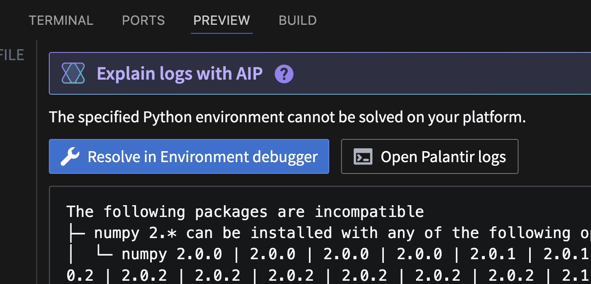
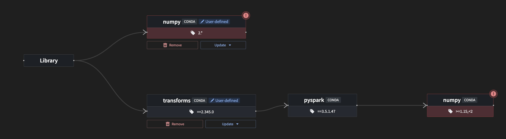
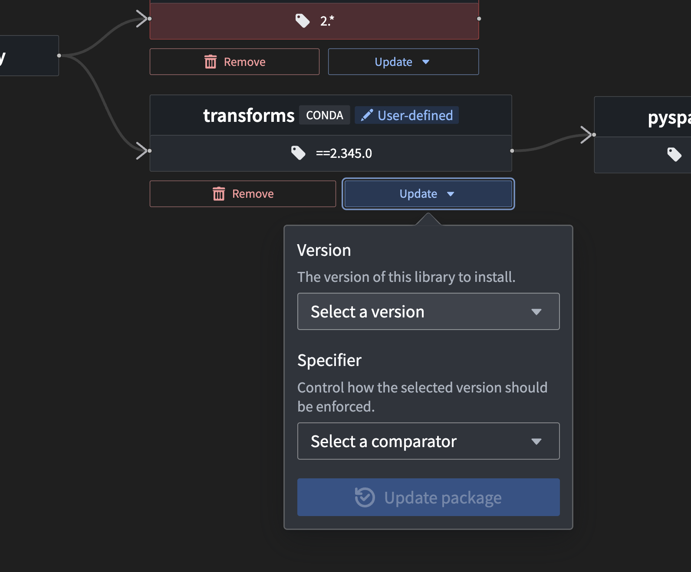
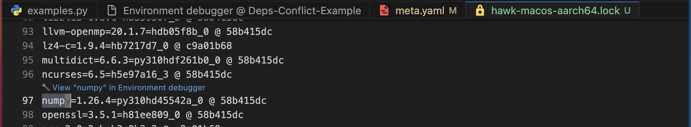
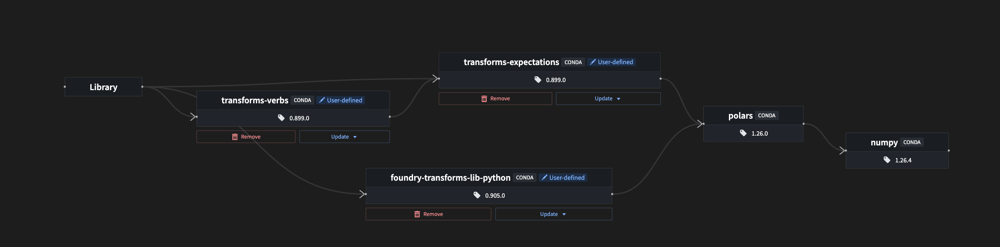

The environment debugger helps with understanding dependencies in Python transforms environments in VS Code. When a dependency installation fails, the environment debugger displays conflicts and reveals the underlying issue, allowing the conflict to be actioned immediately. In cases where an installation succeeds, the environment debugger allows users to understand the transitive dependencies that brought a given package into the environment.
When encountering a solve conflict, the Resolve in environment debugger option will be displayed. This is triggered by the following:

Selecting this option opens a new tab in VS Code with an interactive graph visualizing environment conflicts.

Note the following graph features:
user-defined. User-defined packages will display available actions; removing a dependency or changing the version. This enables conflict resolution without leaving the environment debugger.
When a Python environment is resolved successfully, the environment debugger can help trace package origins and understand which dependencies caused them to be added to the environment. To view packages, open the hawk lockfile in the .maestro folder. You can then select a package, which will display the View [package name] in environment debugger option above the package. Select this option to open the environment debugger.

The environment debugger contains a graph displaying the relationship between the selected package and the packages that import it. All transitive paths that cause this package to be required are shown, with their respective versions. This helps trace the origin of the selected package, enabling users to visualize the imports that depend on the selected package and version.
